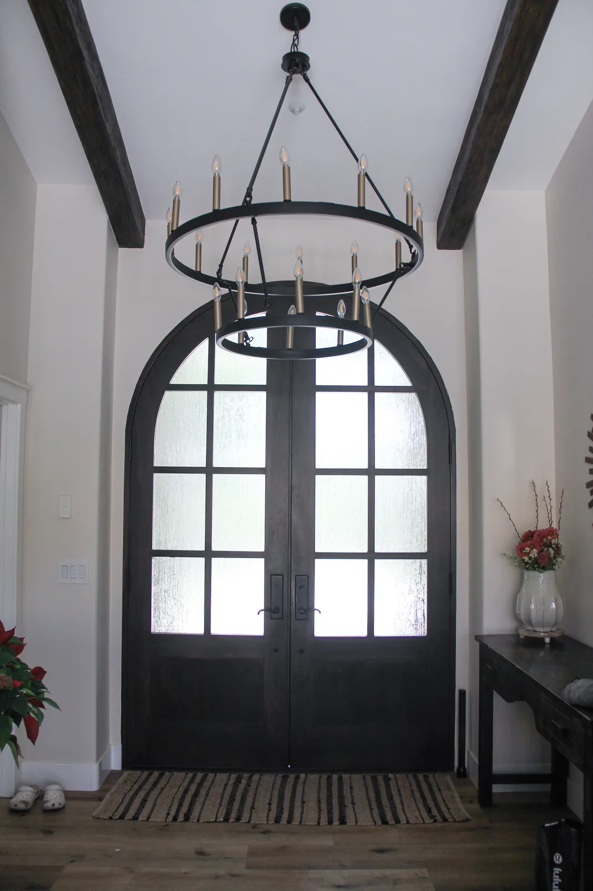
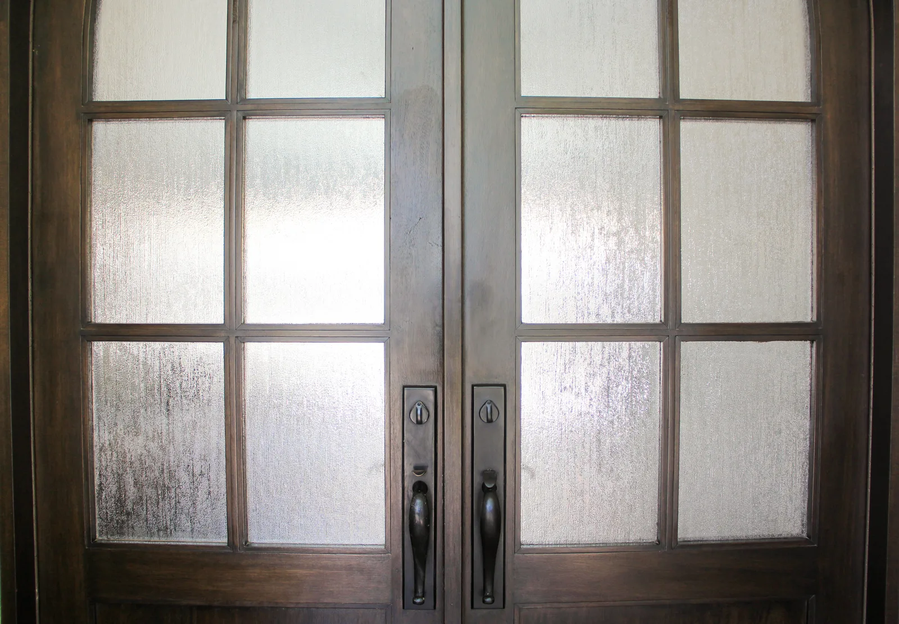

Custom doors & windows
Openings that belong to the architecture
From statement entries to full-home packages, we design and fabricate custom units for the proportions, materials, and character of the renovation.
- Large renovation packages
- Architectural matching
- Custom profiles
